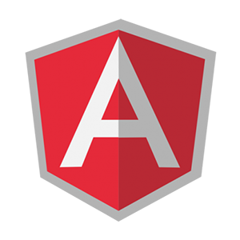
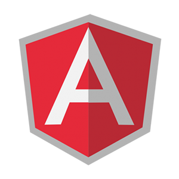

My Skills
 

Personal Data
- Date of birth — February 22, 1991
- Place of birth — Kyiv, Ukraine
- Age — 24
- Marital status — Single
- Pernicious habit — absent
- Striving for professional and personal development - constant
- Good understanding of both written and spoken English
- Excellent communication, negotiation and presentation skills
Education
Certificate of completion: Junior Front-End Developer
IT EDUCATION ACADEMY UKRAINE LLC
Certificate of completion: JavaScript Essential
Certificate of completion: JavaScript Advanced
Certificate of completion: JavaScript Professional
Specialist Degree "Management information sysytem and technology" — (2011 - 2012)
Bachelor Degree "Management information sysytem and technology" — (2007 — 2011)
School
Latest Work
More About Me
Bike
What I really adore is cycling. Especially If I have a lucky chance to do it somewhere in mountainous areas, where I can find some great slopes. Well, I can't say I am a real pro at this activity, but it's riding a bike that give me pleasure. Downhill competitions have a tremendous allure to me! Also, I like the combination of this kind of sport and the fabulous landscapes itself. The speed, nature and the adrenalin — is a real satisfaction to me. And in all this activity. The responsibility is in your own hands in a literal sense.Love Physical Exercises
By and large, I like everything that is called outdoor activity. But I like to test myself with different physical activities as well. For me, one of the best way to do it — to pass training by the CrossFit methodology. Due to CrossFit training, besides strength, speed and stamina, you can also gain a determined character. You can either complete or just give up... That is the choice that we always face with in everyday life. Such training help you to win over yourself, both in physical and mental senses.Love Music
For me, music means much more than just a hobby or fascination. I prefer progressive electronic music most of all. Recently, I've fond of eclectic music genre. From time to time I visit music studio to play behind the DJ mixer. I like it very much. Although I don't get caught in an endless loop by electronic music since I keen on Jazz, Blues, Funky-Jazz. I think I am a kind of lisztoman :)Portfolio
Contact
I am looking forward for fruitful collaboration in the future. If you are interested, please, feel free to call me or send an email. I will be grateful for your invitation for an interview.
I'm looking forward to hearing from you!
093 929 44 78